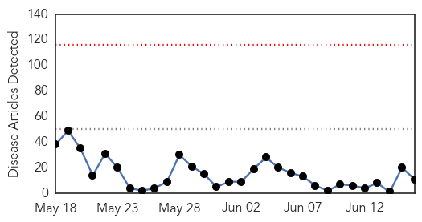
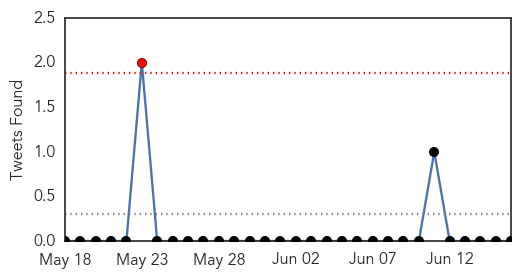
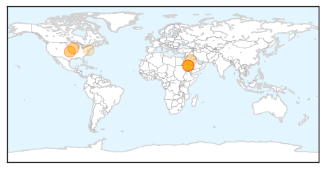
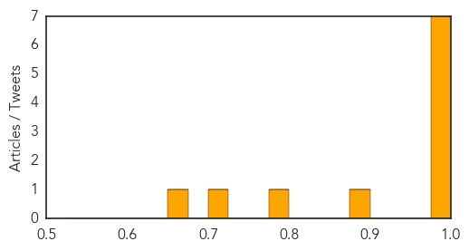

Toggle navigation
Early Warning
Daily Alerts
Middle East Respiratory Syndrome
Jun 16, 2014
Compare to:
-
Dengue Fever
Hemmorhagic Fever
Mold/Fungal Infection
Influenza
Meningitis
Pertussis / Whooping Cough
Cholera
Hepatitis
Chikungunya
Yellow Fever
Bubonic Plague
West Nile Virus
Swine Flu
Ebola
Measles
Unknown
Mumps
30 Day Trends
Web: 0
alerts
, 0
warnings
Twitter: 1
alerts
, 0
warnings
Top Articles:
0.999
Two Cases Of MERS CoV Infection Reported In Saudi Arabia
0.998
New Cases of MERS-CoV are Reported to WHO, Including First Cases in Algeria
0.991
Killer virus demands open accounting
0.991
Bangladesh has first MERS case
0.981
Sudan Vision Daily
0.981
Bangladesh reports first case of MERS virus
0.977
Bangladesh reports first case of MERS infection
0.893
USDA licenses first vaccine for Porcine Epidemic Diarrhea Virus
0.796
Bangladesh detects first MERS case
0.706
Iowa firm awarded first license for PEDv vaccine
0.672
Deadly pig virus not in Delaware yet
Top Tweets:
No tweets found for Jun 16, 2014
Web/News Articles

Tweets

Article Locations

Article Confidences
